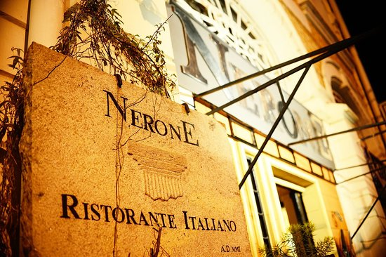
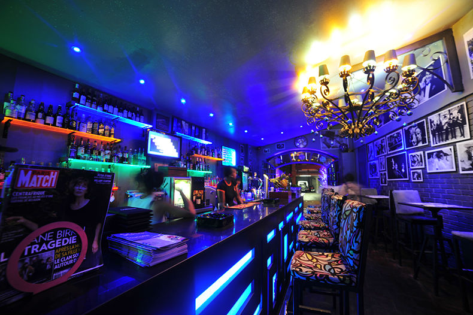
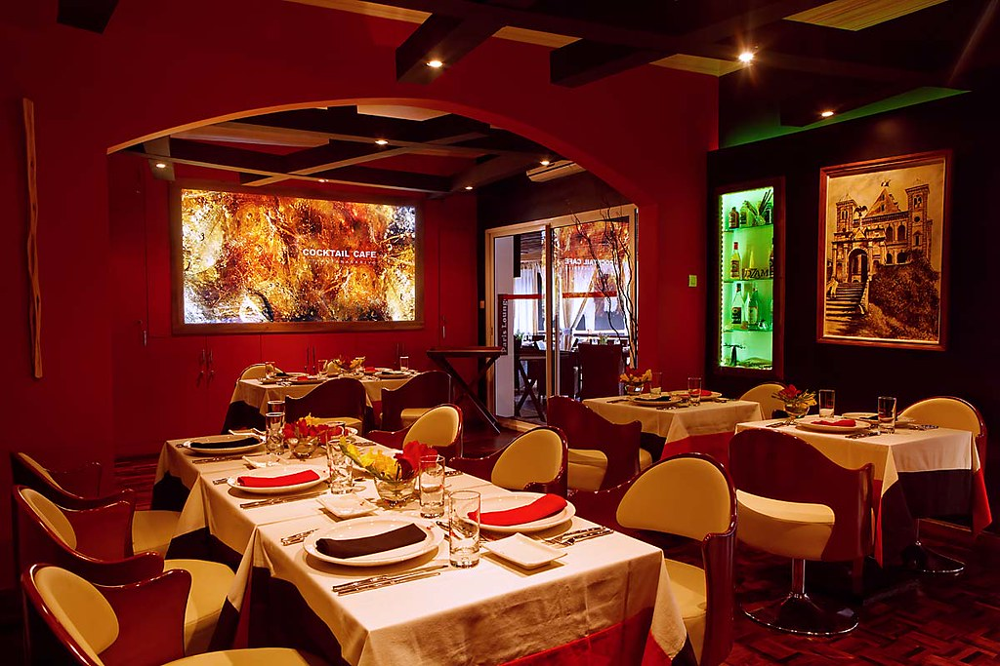
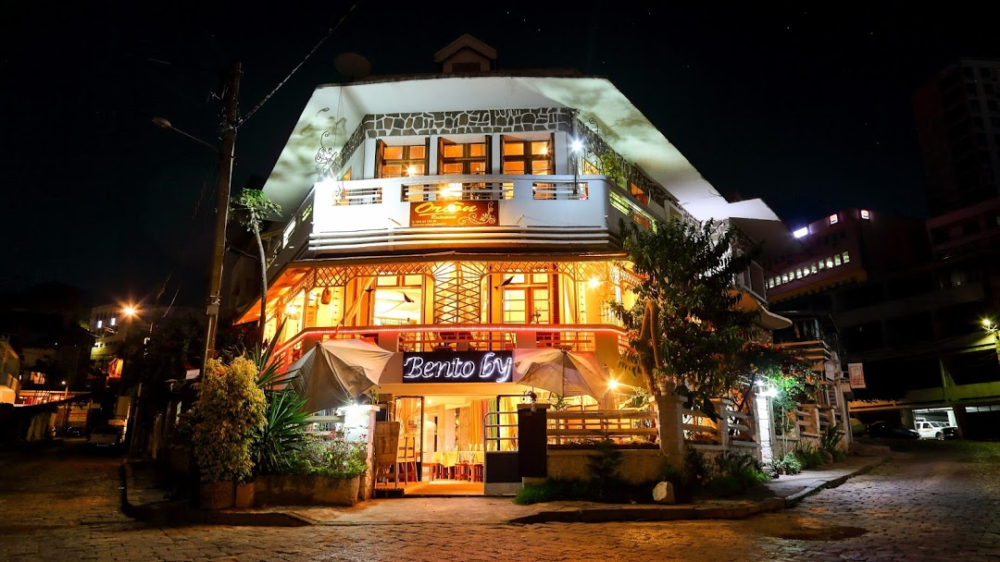
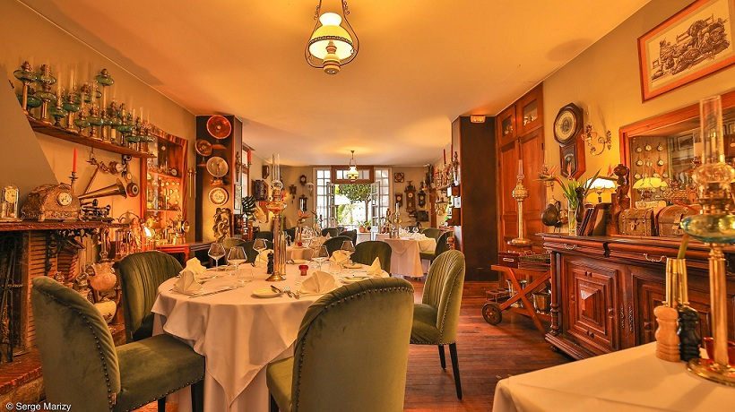

|

Nerone Restaurant Italiano $$ - $$$ |

Le Carnivore - Restaurant Bar Lounge $$ - $$$ |
|

Dzama Cocktail Café Antananarivo $$$$ |

L'orion Restaurant $$- $$$ |
|

La Varangue Hotel Restaurant $$$$ |